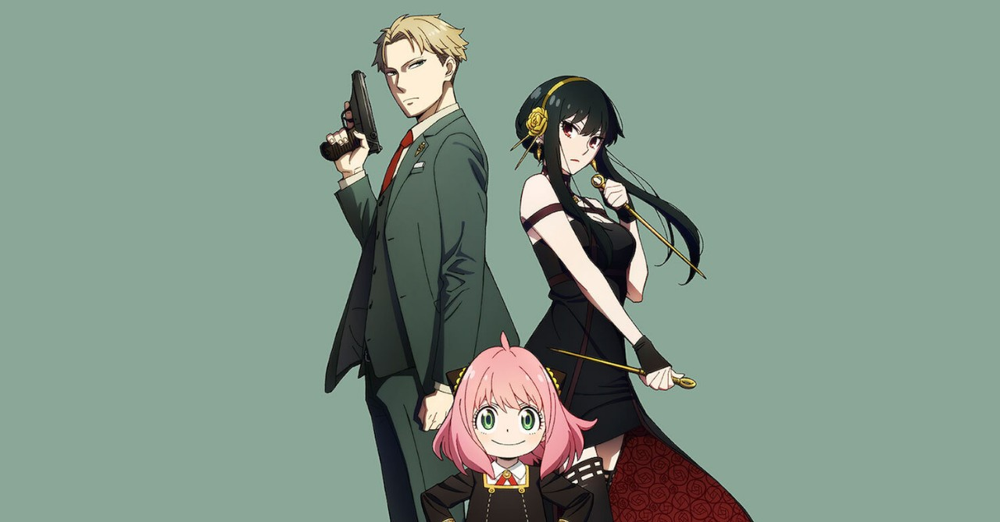
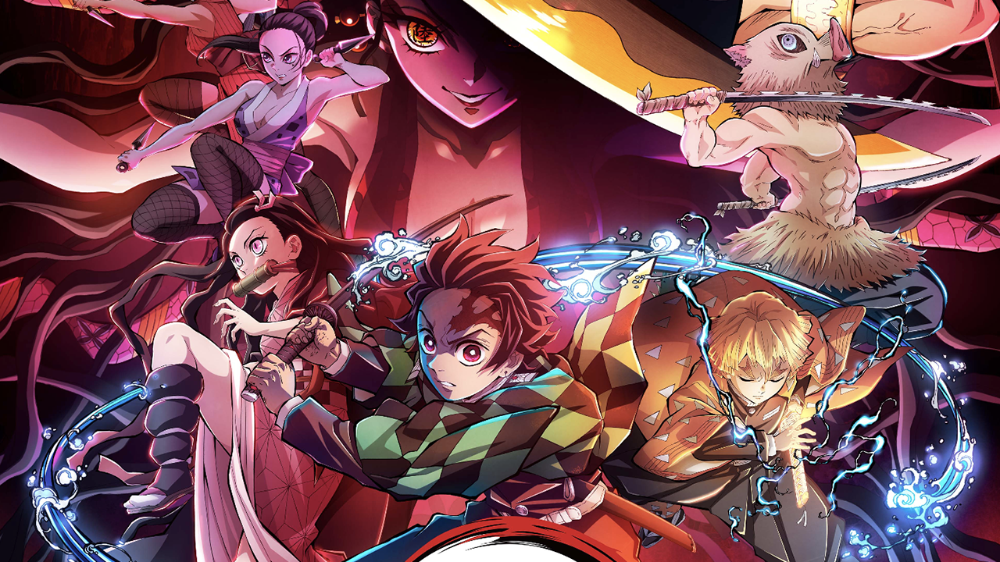
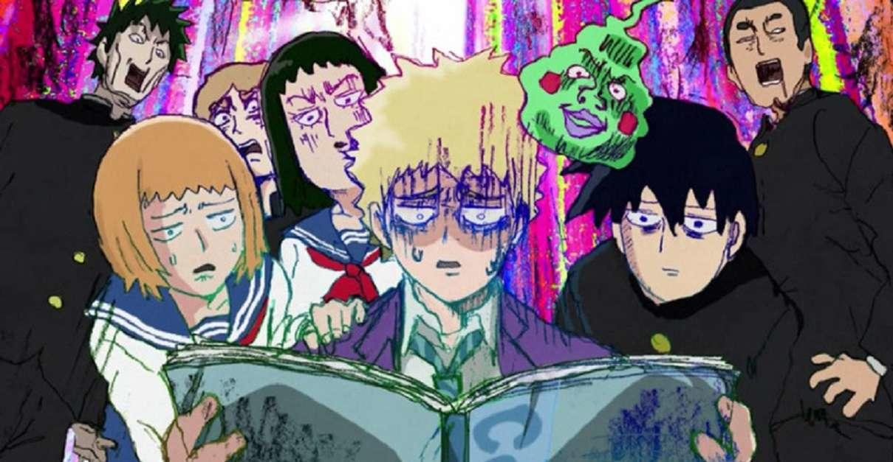
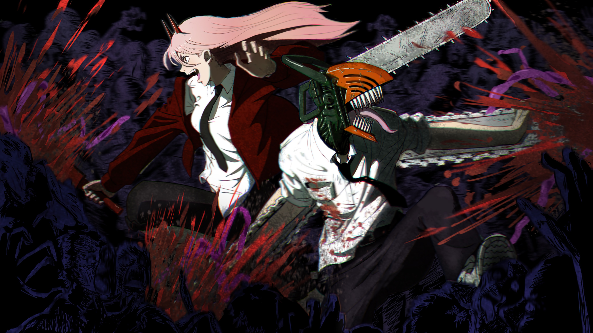

Spy x Family

Demon Slayer: Kimetsu no Yaiba

Mob Spycho 100

Chainsaw Man
My rating
IMDB rating
Chainsaw Man
6.2
8.7
Spy x Family
8.0
8.5
Mob Psycho 100
7.2
8.6
Demon Slayer: Kimetsu no Yaiba
7.8
8.7
Summary
Chainsaw Man
Denji is a young boy who works as a Devil Hunter with the “Chainsaw Devil” Pochita. One day, as he was living his miserable life trying to pay off the debt he inherited from his parents, he got betrayed and killed. As he was losing his consciousness, he made a deal with Pochita, and got resurrected as the “Chainsaw Man”: the owner of the Devil’s heart.
Spy x Family
World peace is at stake and secret agent Twilight must undergo his most difficult mission yet—pretend to be a family man. Posing as a loving husband and father, he’ll infiltrate an elite school to get close to a high-profile politician. He has the perfect cover, except his wife’s a deadly assassin and neither knows each other’s identity. But someone does, his adopted daughter who’s a telepath!
Mob Psycho 100
Kageyama Shigeo, a.k.a. "Mob," is a boy who has trouble expressing himself, but who happens to be a powerful esper. Mob is determined to live a normal life and keeps his ESP suppressed, but when his emotions surge to a level of 100%, something terrible happens to him! As he's surrounded by false espers, evil spirits, and mysterious organizations, what will Mob think? What choices will he make? The anime based on the original story by ONE, the idol of the webcomic world and creator of One-Punch Man, is coming your way with animation by leading animation studio Bones!
Demon Slayer: Kimetsu no Yaiba
It is the Taisho Period in Japan. Tanjiro, a kindhearted boy who sells charcoal for a living, finds his family slaughtered by a demon. To make matters worse, his younger sister Nezuko, the sole survivor, has been transformed into a demon herself. Though devastated by this grim reality, Tanjiro resolves to become a “demon slayer” so that he can turn his sister back into a human, and kill the demon that massacred his family.